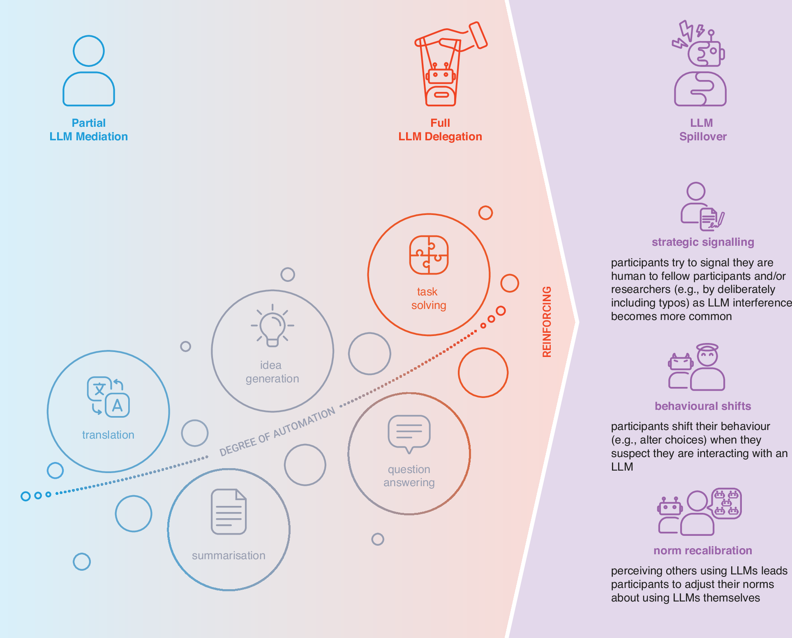

全文精读
识别与缓解在线行为研究中的大语言模型污染
Recognising and mitigating LLM Pollution in online behavioural research
解读更新 2026-11-15 22:33 · 依据论文全文整理
全文精读已完成，文章版正在逐步升级。现有内容可继续阅读。
在线行为实验通常将回答视为人类认知与行为的证据，但参与者使用大语言模型可能动摇这一前提。本文是一篇评论文章，区分部分模型中介、完全模型委托及模型溢出，并讨论三者如何影响样本真实性与研究效度。 作者整理研究者、平台和共同体层面的预防与事后检测措施，同时强调绕过风险、隐私成本及检测诱发的行为反应。 其价值在于概念梳理和研究设计警示，而非提供已获系统验证的检测算法。
研究问题
论文追问：当在线实验回答受到模型辅助或代理接管时，研究还能否有效测量人类行为？污染不一定来自恶意作弊，翻译、润色和节省精力也可能改变测量对象。作者强调，这既是来源识别问题，也是研究结论究竟描述谁的认识论问题。
方法与路线
作者以评论文章形式，综合实验室观察、既有研究和概念区分构建分析框架，而非报告完整的对照实验。图1组织污染类型与相互作用，表1按实施方式、责任主体、目的、适用变体和风险整理措施，使概念分析连接到具体研究设计。
创新与比较
本文的概念贡献是把直接使用模型与间接行为变化纳入同一框架：部分中介和完全委托形成自动化连续谱，溢出则包含预期、残留与规范变化。解读：其特色不是新增检测器，而是说明没有直接调用模型的参与者也可能受污染环境影响。
证据与发现
作者试点观察到45%的参与者发生复制或粘贴，但这只是潜在模型参与的线索，不能当作确证使用率。作者综合论证模型参与可能压低回答差异、改变处理效应，且限制委托的措施可能强化溢出；这些论点不等同于本文完成了统一因果验证。
局限与边界
本文属于概念性评论，表1未提供措施间的定量效果比较，不能据此确定最优方案。补充材料未提供，技术测试细节仍缺少可核对依据；代理绕过与模型更新也限制防护的持续性。逐页记录未发现已确认的原文件缺项，提取错误不属原文缺陷。
方向关联
解读：对智能运维与可靠性研究，本文可启发审查专家判断、人工标注及反馈数据是否混入模型辅助，并关注筛查对真实人员行为的影响。但论文没有研究设备退化、故障诊断或结构设计，不能把概念迁移视为这些领域已获得验证的方法成果。
后续研究建议
建议：在依赖人工判断的研究中，预先界定允许的模型辅助范围，并比较不同来源数据的分布与结论稳健性；对检测措施同时记录误排、参与体验和行为反馈。这是可迁移的研究设想；作者直接提出的后续任务则包括污染追踪、措施评估及溢出测量。
阅读建议
推荐作为人机混合数据质量与实验效度的方法论参考，重点阅读图1、表1及讨论；不宜将其作为工程检测算法或干预效果的实证依据。
原图未改动。以下图注来自标注的来源，不据此补写摘要未报告的实验结论。
已取得的论文原图


原文图注与出处
Partial LLM Mediation refers to cases where participants use LLMs for translation, idea generation, or performance gains. Full LLM Delegation involves the use of agentic tools or plugins to automate participation entirely. LLM Spillover refers to normative or behavioural shifts prompted by participants' beliefs about LLM involvement, regardless of whether any is present. These variants can interact and reinforce one another, compounding their threat to research validity and inference. Illustration by H. Jahani.
Rilla, Raluca et al.
原文图页 · CC BY 4.0